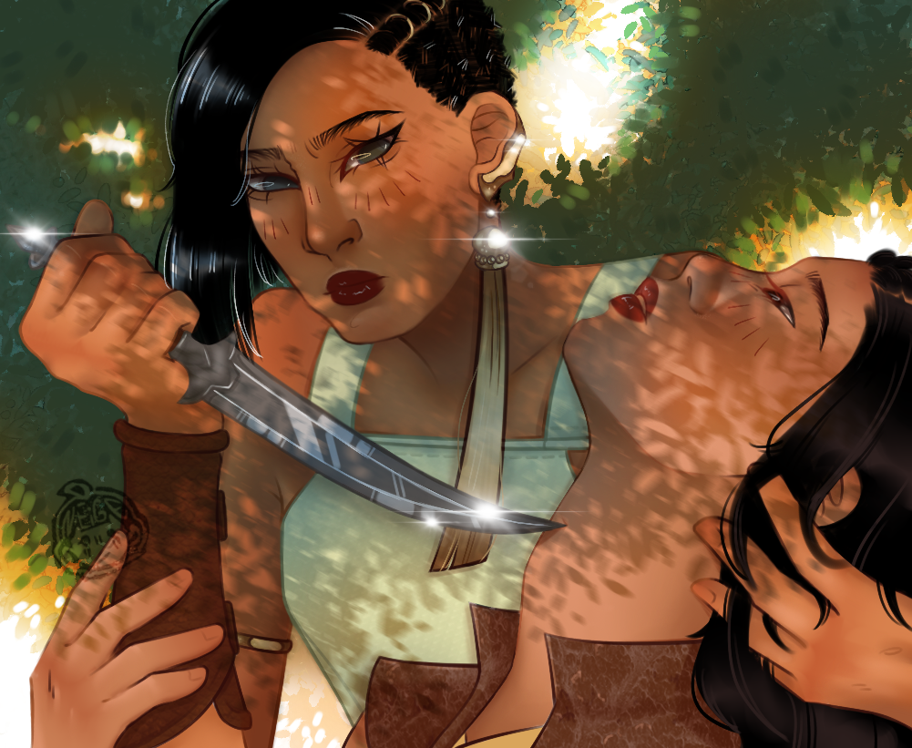
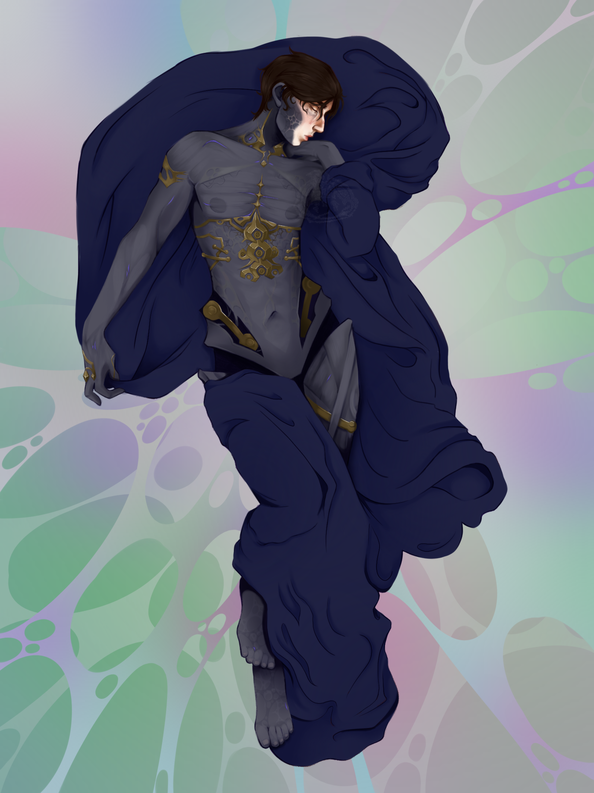
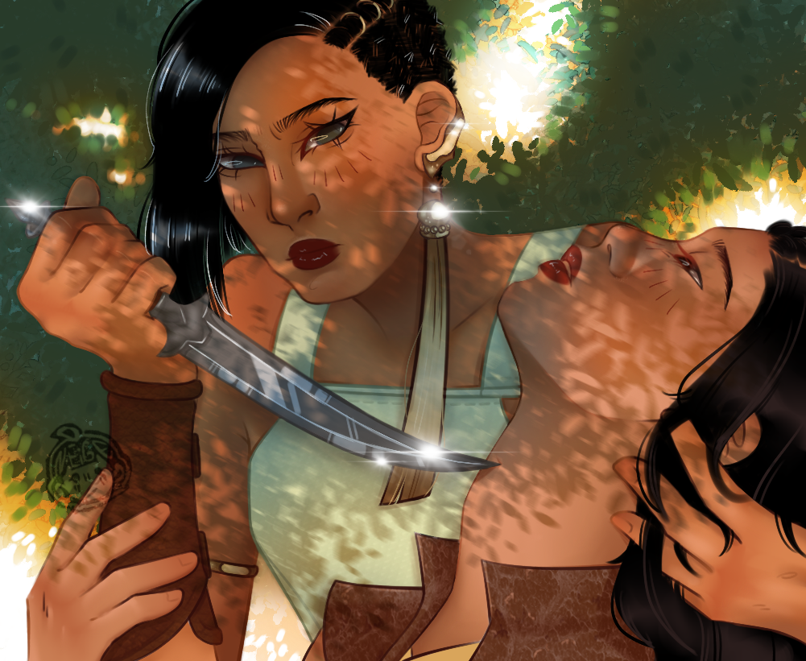
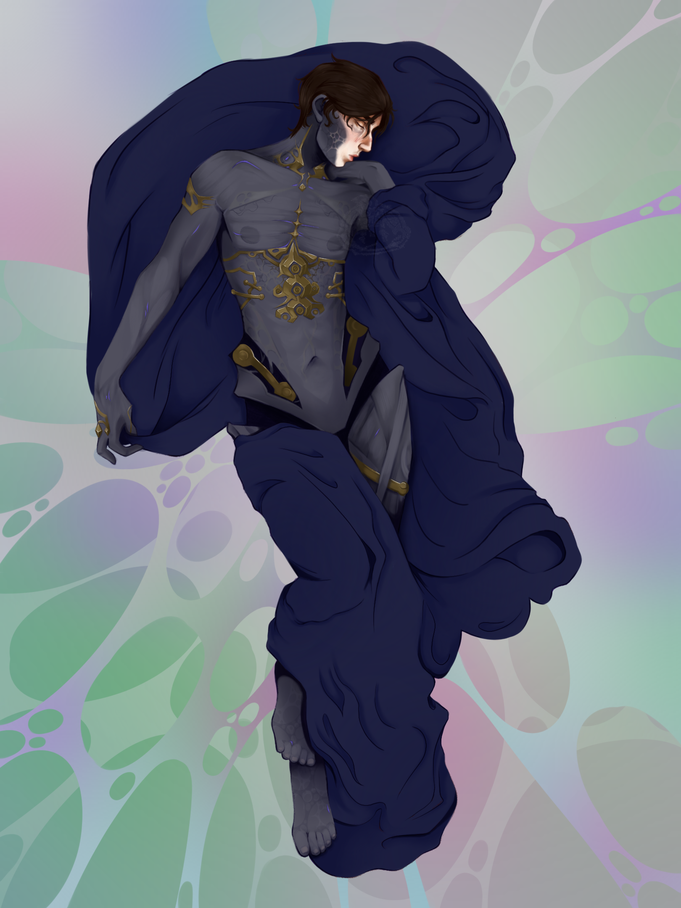

NEDJMA'S PORTFOLIO

Je m’appelle Nedjma Petit et je suis passionnée par le langage sous toutes ses formes, qu’il soit verbal, visuel ou interactif. Après un baccalauréat général obtenu en 2022, j’ai choisi d’orienter mon parcours vers les sciences du langage puis le design numérique.
Curieuse et créative, je m’intéresse aux arts, à l’expérience utilisateur et au design d’interfaces.
 



Actuellement étudiante en licence Sciences du Langage à la Faculté des Lettres et Sciences Humaines de Limoges, j’ai d’abord suivi une licence LLCER Anglais, où j’ai développé mon esprit critique et approfondi ma compréhension de la langue anglaise et de la communication. Passionnée par les arts, cette spécialisation m’a naturellement conduite à m’intéresser aux interfaces numériques et aux nouvelles formes de communication digitale.
Dans cette optique, je me prépare à intégrer un Master en Co-design et Expérience Utilisateur pour Interfaces Numériques Sensorielles. Ce parcours me permettra d’acquérir des compétences analytiques et stratégiques, notamment en diagnostic des interfaces existantes, en conception d’expériences utilisateur, et en intégration du co-design dans les projets web. J’y développerai également des compétences en conception et développement d’interfaces graphiques web, accessibilité numérique, gestion de projet et création de supports de communication web.
En parallèle de mes études, j’ai pu travailler comme serveuse et libraire chez "Les Gens Qui Doutent" mais également serveuse à "L'Agappe" à l'occasion de stages où j’ai appris la rigueur, l’adaptabilité et le sens du contact. Ces compétences humaines viennent compléter mes savoir-faire, que j’ai développés en autodidacte à travers divers outils numériques : Procreate, Blender, Nomad Sculpt pour la création graphique et 3D, ainsi que HTML, CSS et JavaScript pour le développement web. J’ai notamment conçu ce portfolio de A à Z.
Je maîtrise le français et l’anglais (niveau C2), ainsi que l’allemand (niveau B1). Dotée d’un bon sens de l’organisation et à l’aise avec les outils informatiques, je suis toujours à la recherche de nouvelles expériences pour enrichir mon parcours.
Email : nedjmapetit@gmail.com
Téléphone : 07 66 42 30 07